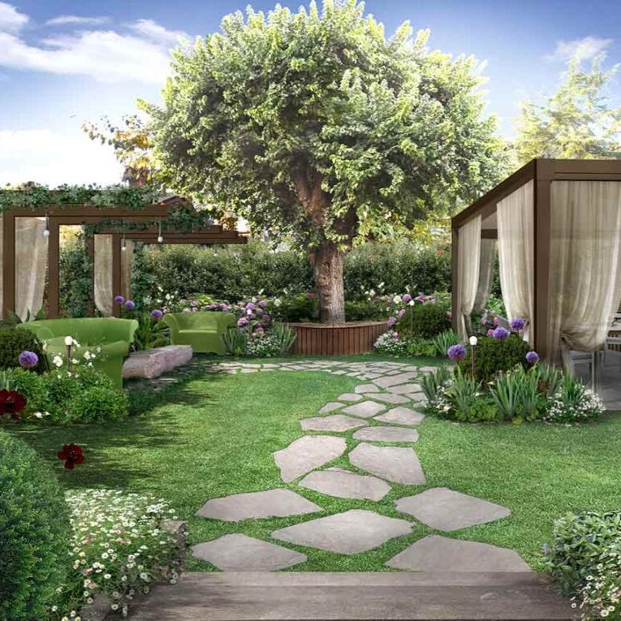
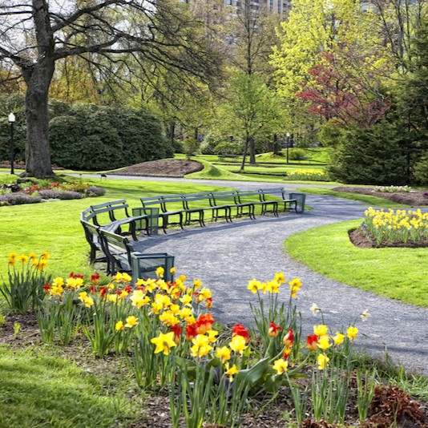

Esperienza e dedizione per ogni spazio verde

Progettiamo e realizziamo spazi verdi personalizzati, studiati per valorizzare ogni ambiente esterno. Dall'idea iniziale alla messa a dimora delle piante, curiamo ogni dettaglio per creare giardini armoniosi, funzionali e adatti allo stile e alle esigenze del cliente.
Ci occupiamo della scelta, piantumazione e manutenzione di fiori stagionali e ornamentali, ideali per dare colore e vitalità a giardini, terrazzi e balconi. Realizziamo composizioni floreali e aiuole decorative pensate per ogni stagione.

Offriamo servizi completi di manutenzione per mantenere il tuo giardino sempre curato e in salute. Taglio del prato, potature, trattamenti specifici e pulizia degli spazi verdi vengono eseguiti con attenzione e professionalità.